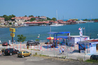
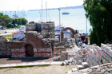
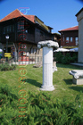

Nesebar
An ancient town with many historical sites. It suits mainly middle-class tourists with cultural needs.
Windmill
Hotel with genuine design
Fountain
Connection- 
Yacht Port
Ancient house
Pedestrian
Church
Architecture
Museum
Remains
Archangels Michael and Gabriel
Clock
Saint Sofia
More from Saint Sofia
Saint Sofia Sign
Antiques
More shops
Romantic Restaurant
Pirate Ship
Beach
In The Water- 
More Remains
Modern Yacht
Stairs
Old Nesebar
Captains Meeting
The beach of the new city
Hotels in the new city
Garden
More antiques- 
Well Maintained
Police
Hotness
Statue
Stylish
Boats